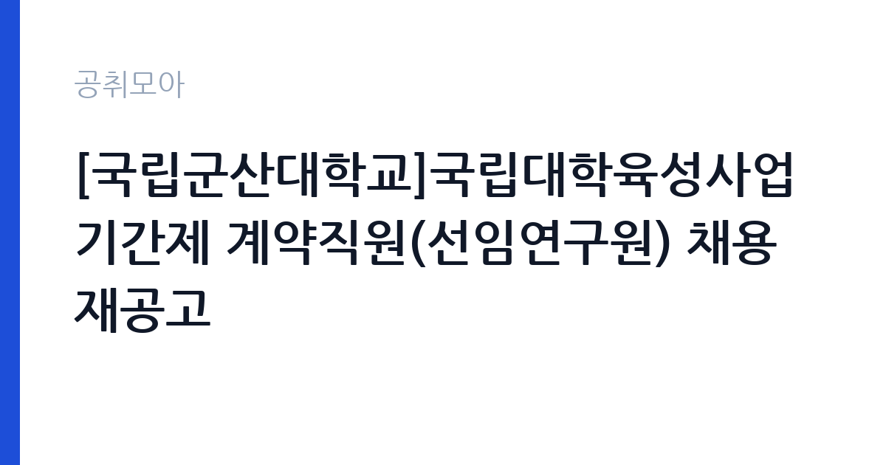

[국가기관] [국립군산대학교]국립대학육성사업 기간제 계약직원(선임연구원) 채용 재공고
국립군산대학교 · 전국 · 마감 2026-10-15 (D-5) · 출처 나라일터

한눈에 보는 모집 조건
| 기관 | 국립군산대학교 |
|---|---|
| 공고명 | [국립군산대학교]국립대학육성사업 기간제 계약직원(선임연구원) 채용 재공고 |
| 고용형태 | 기간제 |
| 근무지 | 전국 |
| 게시일 | 2026-10-08 |
| 마감일 | 2026-10-15 (D-5) |
지원자격, 이렇게 읽으세요
- 선임연구원 1명
- 접수 ~2026-10-15 마감
- 세부 조건은 원문 공고문 확인
채용직급이 선임연구원인 만큼 일정 수준 이상의 학력과 연구 경력이 요구될 가능성이 큽니다. 구체적인 응시 자격과 우대 조건, 경력 산정 기준은 첨부파일의 공고문 전문에서 반드시 확인하셔야 합니다. 일반적으로 국립대학의 선임연구원급 계약직은 관련 분야 석사 학위 이상 소지자를 대상으로 하며, 사업 관리나 연구행정 경력을 함께 평가합니다. 재공고라는 점에 주의하실 필요가 있습니다. 앞선 공고의 조건이 그대로 유지되는 경우가 대부분이므로, 지난 모집에서 지원자가 적었거나 적격자가 없었던 사유를 짐작해 보고 본인의 서류를 그에 맞춰 보강하시는 전략이 유효합니다. 문의처인 기획조정과 재정사업팀(063-469-7308)에 접수 전 자격 충족 여부를 상담하시는 방법도 있습니다.
이 공고의 포인트
국립대학육성사업은 교육부가 국립대학의 자율 혁신을 지원하는 대표적인 재정지원사업으로, 대학 입장에서는 한 해의 역점 과제를 실행하는 핵심 재원입니다. 이 사업의 전담 연구원은 사업계획 수립과 예산 집행 관리, 성과지표 점검, 결과보고서 작성까지 사업의 전 주기를 다루게 됩니다. 대학 행정과 정책 연구, 평가 실무를 한 자리에서 경험할 수 있어 고등교육 행정이나 교육정책 분야로 진로를 넓히려는 분께 경력의 발판이 됩니다. 국립군산대학교는 전북 군산의 거점 국립대학으로, 지역과 연계한 특성화 과제를 다수 운영하고 있어 현장감 있는 사업 경험을 쌓을 수 있습니다. 재공고라 경쟁 부담이 다소 낮아진 시점이기도 합니다.
전형은 어떻게 진행되나
선발 방법은 서류전형(1차)과 면접전형(2차)으로 공고문에 명시되어 있습니다(출처: 나라일터 모집공고 발췌). 서류전형에서는 응시 자격 충족 여부와 학위, 연구 및 사업 관련 경력을 중심으로 평가합니다. 면접전형에서는 육성사업에 대한 이해도와 직무 수행 계획, 조직 적응력을 확인하는 것이 일반적입니다. 접수 방법은 온라인 접수이며 접수처는 국립군산대학교 채용 시스템입니다. 접수 마감 시각이 10월 15일 17시로 못 박혀 있으므로, 시스템 접속이 몰리는 마감 당일을 피해서 여유 있게 제출하시기 바랍니다. 면접 일정과 최종합격자 발표 일정은 서류전형 이후 별도 안내되므로 접수 시스템의 공지를 주기적으로 확인하십시오.
원문에서 확인한 전형 방식
○채용직급: 선임연구원(1명) ○접수기간: 2026. 10. 8.(목) ~ 10. 15.(목) 17시 까지 ○선발방법: 서류 전형(1차) 및 면접 전형(2차) ○접수방법: 온라인 접수(https://kunsan.korus.kr) ○문의처: 국립군산대학교 기획조정과 재정사업팀(063-469-7308) * 기타 자세한 내용은 첨부파일 참고 바랍니다.
이런 분께 추천해요
- 고등교육 정책이나 대학 재정지원사업에 관심이 있는 석사 학위 이상 소지자로, 연구와 행정을 함께 경험하고 싶으신 분께 적합합니다.
- 대학이나 공공기관에서 사업 기획과 성과관리, 평가 대응 실무를 다뤄본 경험이 있는 분께 잘 맞는 자리입니다.
- 군산과 전북 지역 근무가 가능하고 국립대학의 혁신 사업에 참여하고 싶은 연구자에게 권합니다.
지원 전 체크리스트
- 첨부파일의 공고문 전문에서 학위와 전공, 경력 요건과 우대 조건을 꼼꼼히 확인하십시오.
- 온라인 접수 시스템에 미리 가입하고 증빙서류 파일 형식과 용량 제한을 파악하십시오.
- 접수 마감 시각인 10월 15일 17시를 엄수하고, 가급적 마감 하루 전까지 제출을 마치십시오.
- 재공고 사유를 염두에 두고 자기소개서에 사업 이해도와 즉시 투입 가능성을 분명히 드러내십시오.
모집 일정과 제출 타이밍
공고와 접수 기간은 2026년 10월 8일부터 10월 15일 17시까지로 약 7일입니다. 재공고 특성상 접수 기간이 짧게 설정되는 경우가 많으므로 일정 관리가 중요합니다. 서류전형 합격자 발표와 면접전형, 최종합격자 발표 일정은 추후 안내될 예정이며, 국립군산대학교 채용 시스템과 문자 안내를 확인하시면 됩니다. 근무 시작일은 합격자 발표 이후 협의되는 것이 일반적이므로, 현재 재직 중인 분께서는 인수인계 기간을 미리 염두에 두시기 바랍니다.
직무 이해하기: 국가기관
선임연구원은 국립대학육성사업의 기획과 집행, 성과관리를 실무에서 이끄는 역할을 맡습니다. 세부적으로는 연차 사업계획서 작성과 예산 편성 지원, 세부 과제별 진도 점검, 성과지표 실적 집계, 교육부 보고자료 작성, 사업비 정산과 감사 대응 같은 업무가 포함됩니다. 대학 내부의 단과대학과 행정부서, 외부의 교육부와 유관기관 사이를 오가는 조정 업무도 적지 않습니다. 보고서와 통계자료를 다루는 일이 많으므로 문서 작성 능력과 엑셀 활용 능력이 필수이며, 사업 현장을 이해하는 소통 능력이 함께 요구됩니다. 대학이라는 공공 조직의 의사결정 구조를 배우는 기회가 되기도 합니다.
자기소개서 작성 팁
자기소개서에서는 국립대학육성사업이라는 특정 사업에 대한 이해를 보여주는 편이 좋습니다. 교육부의 육성사업 취지와 국립군산대학교의 특성화 방향을 한 문단으로 정리한 뒤, 본인의 연구나 사업 경험을 그 틀에 맞춰 서술하십시오. 성과지표 관리나 보고서 작성, 예산 집행 경험이 있다면 규모와 성과를 곁들여 적어주십시오. 재공고 지원이라는 점을 의식해서라도 즉시 업무에 투입될 수 있는 준비 상태를 강조하시는 편이 좋습니다. 국립대학의 공공성과 지역 기여라는 가치를 언급하시면 조직 적합성을 드러내는 데 도움이 됩니다.
면접 준비 포인트
면접에서는 사업 이해도와 실무 대응력을 중심으로 묻습니다. 국립대학육성사업의 구조와 최근 쟁점, 군산대학교의 특성화 과제에 대해 기본적인 학습을 하고 가십시오. 예산 집행 과정에서 일정이 지연되거나 성과지표가 미달할 때의 대응 방안을 묻는 상황 질문이 나올 수 있으므로, 과거 경험을 사례로 준비해 두시면 좋습니다. 대학 조직은 합의와 절차를 중시하므로, 부서 간 협업을 이끌어낸 경험을 정리해 두시는 편이 좋습니다. 복장과 태도는 단정하게 갖추시고, 근무 가능 시기와 장기 근무 의사를 명확히 밝히십시오.
급여·근무조건 읽는 법
보수 조건은 원문 공고문의 보수 항목에서 확인하시기 바랍니다. 국립대학 계약직 연구원의 보수는 대학의 회계와 보수 규정에 따라 직급별로 정해지는 것이 일반적이며, 선임연구원급은 초급 연구원보다 높은 구간이 적용됩니다. 4대 보험과 퇴직금, 명절수당 같은 부가 조건도 공고문에 안내되므로 수치와 지급 기준을 직접 대조하십시오. 원문에 구체적인 금액이 제시되어 있지 않다면 임의로 추측하지 마시고, 기획조정과 재정사업팀(063-469-7308)에 문의하시는 편이 정확합니다.
자주 묻는 질문
- 재공고라는 것은 불리한 신호인가요?
반드시 그렇지는 않습니다. 지원자 미달이나 적격자 부재로 다시 모집하는 경우가 대부분이며, 조건이 그대로 유지되므로 요건을 갖춘 분께는 오히려 경쟁이 완화된 기회가 될 수 있습니다. - 접수는 어디서 하나요?
국립군산대학교 온라인 접수 시스템에서 신청을 받습니다. 접수 마감은 10월 15일 17시이므로 시스템 오류에 대비해 미리 제출하시기 바랍니다. - 어떤 일을 하게 되나요?
국립대학육성사업의 기획과 집행, 성과지표 관리, 보고서 작성을 전담합니다. 대학 행정과 정책 연구 실무를 함께 다루는 자리로 보시면 됩니다.
함께 보면 좋은 공고
[국가기관] [김포공항출입국·외국인사무소] 2026년 제1회 공무직근로자(출국대기실경비원) 채용 공고 — 마감 2026-10-19[국가기관] 선봉대 체력단련장(육군골프장) 공무직근로자 (조리담당) 채용공고 제2026-13호 — 마감 2026-10-26[국가기관] 26년 서초경찰서 무기계약직 근로자[시설관리] 채용 공고문[제 2026-4호] — 마감 2026-10-19출처: 나라일터 공개정보를 바탕으로 공취모아가 정리한 안내글입니다. 모집 조건·일정은 변경될 수 있으니 지원 전 반드시 원문 공고문을 확인하세요. 본 글은 정보 제공용이며 합격을 보장하지 않습니다.